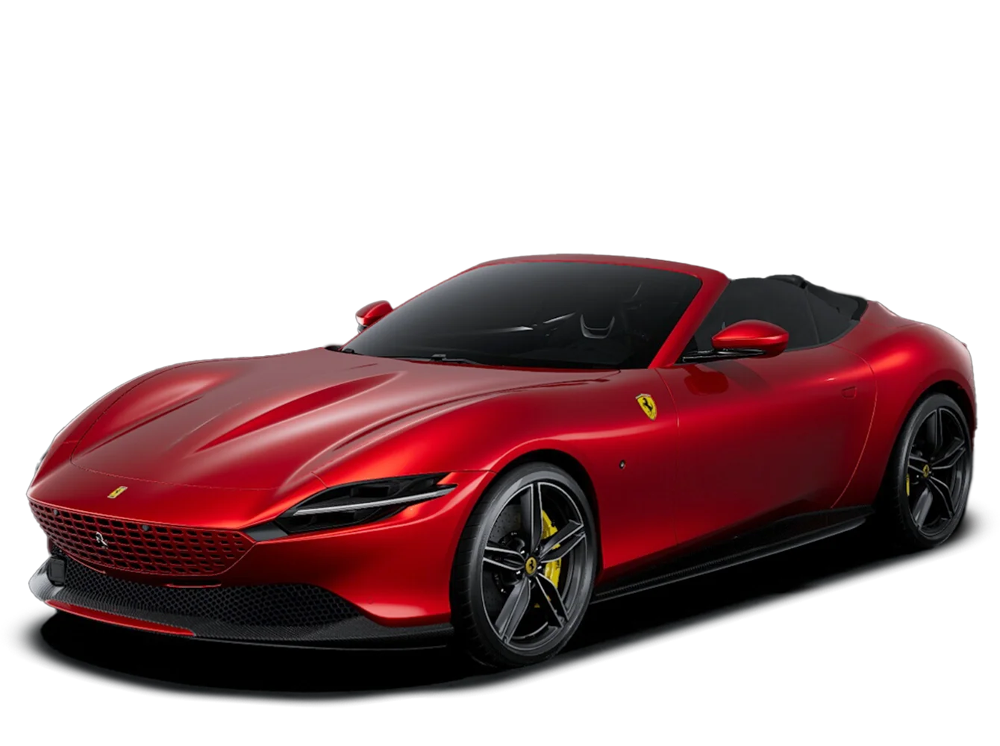
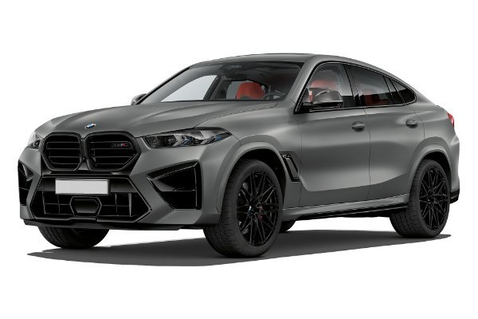

Lançamentos, fichas técnicas e comparativos — em um só lugar.
Conteúdo próprio. Foco em desempenho e design.
São Paulo — SP
Atualizações semanais.
"A estrada certa transforma direção em experiência."
Visite o site oficial da Ferrari
 | Modelo | Potência | Preço |
|---|---|---|
| Ferrari Roma | 620 cv | R$ 2.900.000 |
| BMW X6 | 530 cv | R$ 830.000 |
Ficha rápida: 620 cv · 0–100 km/h em 3,4 s · Tração traseira
Potência, eficiência e tecnologia a bordo — nossa seleção.
Equilíbrio entre força e leveza, com resposta rápida e estilo de Maranello.
Conectividade, segurança e muito espaço para a família.
Testes e comparativos avaliações que mostram o que cada modelo realmente entrega.
Motor 2o geração, emissão CO2 reduzida, equipada com ABS.
AutoClub aproxima você do futuro dos carros, como dizemos sempre:
dirigir é viver o amanhã
.
2025 AutoClub - Todos os direitos reservados.